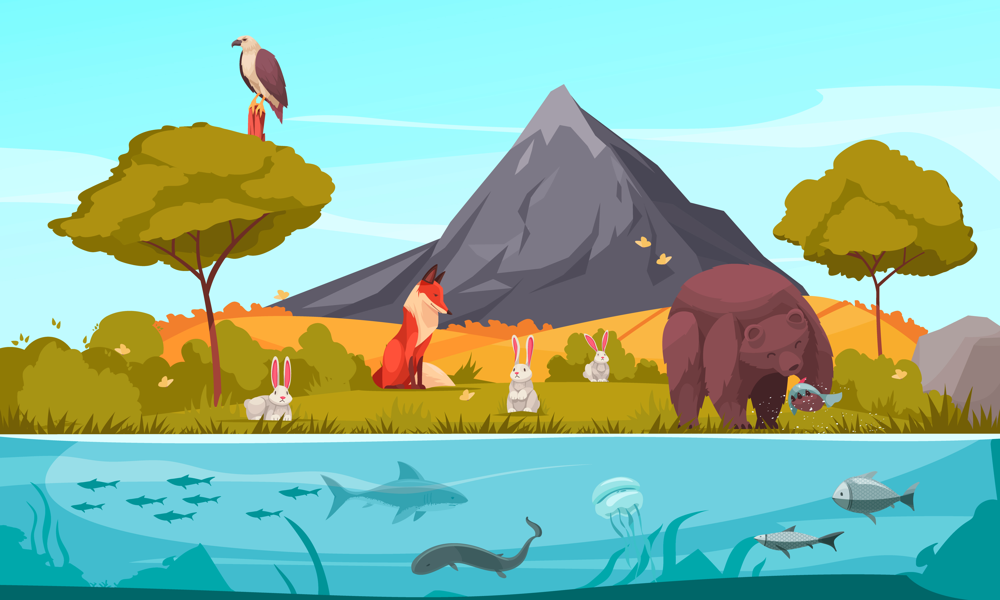

O que é um Ecossistema?
Um ecossistema é uma comunidade de organismos vivos em conjunto com os componentes não vivos do seu ambiente, interagindo como um sistema. Inclui todos os organismos em uma área específica, junto com o ambiente físico (como solo, água, ar) com o qual interagem.

Componentes do Ecossistema
Os ecossistemas têm dois componentes principais:
1. Componentes Bióticos: Todos os organismos
vivos em um ecossistema, como plantas, animais, fungos e
microrganismos.
2. Componentes Abióticos: Todos os elementos
não-vivos que afetam os organismos vivos, como solo, água, ar, luz
solar, temperatura e umidade.
Tipos de Ecossistemas
Os ecossistemas podem ser classificados em dois tipos principais:
1. Ecossistemas Naturais: Formados naturalmente,
como florestas, desertos, oceanos e lagos.
2. Ecossistemas Artificiais: Criados ou
modificados pelo ser humano, como parques urbanos, fazendas e
aquários.
Écotone
Região de transição entre dois ecossistemas diferentes, onde ocorre uma mistura de características de ambos os ecossistemas adjacentes.